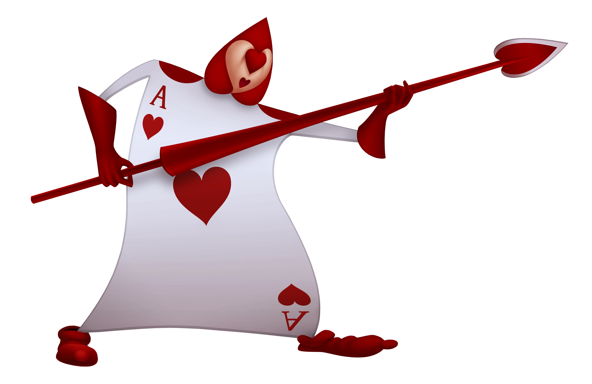
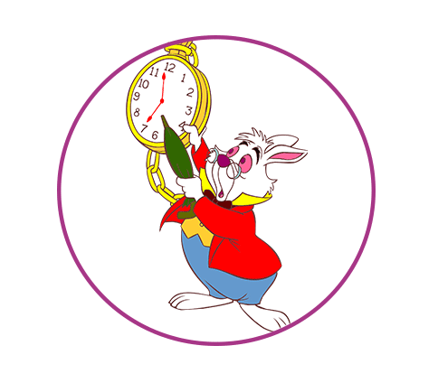

GATO DE CHESHIRE
SOBRE MI:
Soy expresivo, imaginativo, sociable, inteligente y artístico. Me gusta bailar y jugar a aparecer y desaparecer. Soy sensato, profundo y sabio. Me gusta aprender, hablar y hacer amigos. Soy generoso y ocurrente.Tengo un humor particular, interesante, atrapante y divertido. Me encanta el te!
MI ASPECTO:
Mi pelaje es rayado de un color lavanda grisáceo y fucsia. Mis ojos son color negro con pupila redonda y mi membrana es amarilla. Mis dientes están alineados perfectamente y son de un color blanco brillante. Como todo gato poseo una cola y unos bigotes. También poseo una uñas largas y puntiagudas color negro.

EDUCACIÓN:
Bachillerato/1995-2010. País de las maravillas high school.
Universidad Reina Roja - Odontología
Universidad Reina Blanca - Filosofía y letras
EXPERIENCIA:
-Profesor de filosofía
-Dentista
-Guia turístico


HABILIDADES:
-Comunicación
-Responsabilidad
-Capacidad de dirigir
-Capacidad de enseñar
-Creatividad
-Iniciativa
-Manejo de idiomas
IDIOMAS:
-Lenguaje Gato
-Lenguaje Humano

DONES:
Desaparecer
-Todo mi cuerpo
-Dejar mi sonrisa
Mis amigos
- Alicia
- Sombrerero
- Conejo
